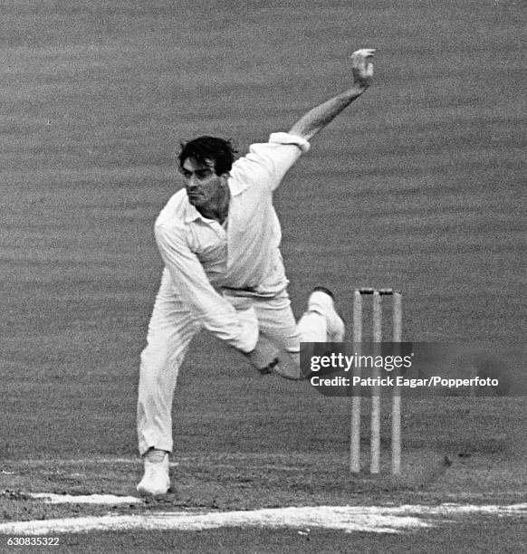
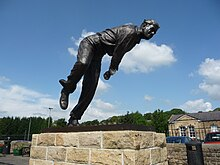

Fred Trueman
Role: Fast Bowler
Bio: Fred Trueman was a legendary fast bowler and one of cricket's first great pace bowlers. With his fierce competitiveness and ability to generate pace and swing, he became one of the most feared bowlers of his era. He was also known for his contributions to English cricket as a commentator and analyst.
Career Stats
| Format | Matches | Innings | Not Outs | Runs | High Score | Average | Strike Rate | 100s | 50s | Wickets | Best Bowling |
|---|---|---|---|---|---|---|---|---|---|---|---|
| Test | 67 | 139 | 15 | 3,306 | 133* | 26.71 | - | 2 | 12 | 307 | 8/31 |
| ODI | 5 | 5 | 1 | 18 | 9 | 4.50 | - | 0 | 0 | 16 | 3/19 |
| T20I | - | - | - | - | - | - | - | - | - | - | - |
Memorable Moments

Trueman's legendary performances in the Ashes series, where he often dominated the Australian batsmen.
His iconic bowling action and fierce competitiveness that set the standard for future generations of fast bowlers.